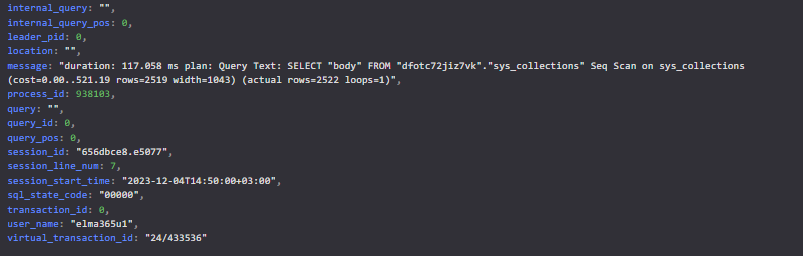

Yandex Cloud provides a unique environment for hosting PostgreSQL databases with monitoring, logging, and performance diagnostic tools. This article explores the Yandex Cloud settings.
Monitoring
To detect issues affecting system performance, analyze host and cluster graphs. Pay attention to anomalies in the data.
To view host graphs, navigate to the Hosts > Monitoring section in the Yandex Cloud interface:
Cluster graphs are located in the Monitoring section.
Performance issues often coincide with an increase in the number of connections. Therefore, check the Total pooler connections graph. During performance slowdowns, the number of connection pools may sharply increase because applications attempt to handle the entire workload by creating parallel pools.
Log analysis
To identify issues in the database, use the Yandex Cloud Logs section.
To collect logs of slow queries, in the cluster settings, in the field Shared preload libraries select and enable the module auto_explain, and configure the parameters:
auto_explain.log_min_duration = 1000; ##Log queries taking more than 1000 milliseconds
auto_explain.log_analyze = true; ##Log output of EXPLAIN ANALYZE command
auto_explain.log_buffers = true; ##Enable buffer usage statistics
log_min_duration_statement = 1000; ##Log queries taking more than 1000 milliseconds
log_min_duration_sample = 100; ##Sample commands with a duration of at least a certain time.
log_statement_sample_rate = 0.5 ##Determines the fraction of commands with a duration reaching log_min_duration_sample to be logged in the journal.

In the logs, pay attention to errors:
- statement duration — slow queries;
- query plans — query plans.
Performance diagnostics
To perform diagnostics:
- In the user settings, in the Grants field, elevate the permission level to
mdb_admin; - In the database settings, enable extensions.
pg_stat_statements ##The module collects statistics on executed SQL queries, including their text, execution time, and call count
pg_stat_kcache ##The module monitors the state of the operating system cache used by PostgreSQL
In the Performance Diagnostics section in the Yandex Cloud interface presents graphical representations of various data:
- Graphical data representation. The number of executions between collection intervals, query execution time, number of result rows, buffer usage information, time spent on input-output operations, and so on;

- query plan text;

- visual plan representation;